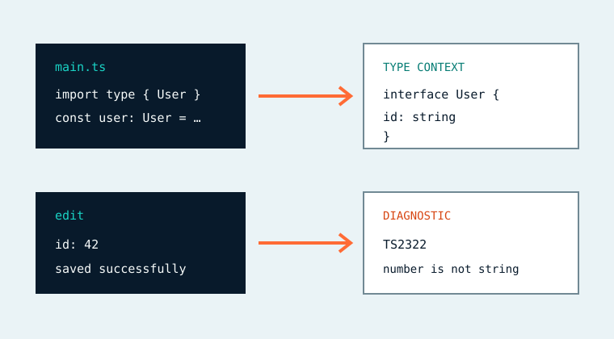

Read with context
Ranked, deduplicated, cycle-safe declarations that are never cut mid-signature.
Type-aware DeepSeek Harness
Complete imported declarations after reads. Changed-file-first diagnostics after edits. Bounded, fail-open, and integrated directly into DSH.

Automatic and explicit
Ranked, deduplicated, cycle-safe declarations that are never cut mid-signature.
Changed-file-first TypeScript diagnostics appear immediately after writes and edits.
Lookup, list, check, and explain tools cover explicit Agent workflows.
Workspace containment, source caps, token budgets, LRU limits, deadlines, and a circuit breaker.
Install and upgrade
Restart the affected DSH profile after either operation.
dsh plugin --profile web add dsh-typelensdsh plugin --profile web update dsh-typelens --latestPrivacy boundary
TypeLens itself makes no external network requests and persists no source-bearing analysis cache. Context appended to an Agent step follows the DSH model provider you configured.
Agent Reliability Toolkit
Verify the live runtime with ARP, review task-scoped residue with ARE, and give DeepSeek Harness bounded type context with TypeLens. Each tool is independent and local-first.